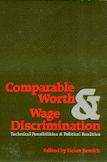

<body bgcolor="#FFFFFF" text="#000000" link="#0000FF" vlink="#CC0000" alink="#CC0000"><center><hr width="350" size="1" align="center" noshade>Fifteen essays examine the highly emotional debate, considering discussions by unions, state legislatures, and the courts<hr width="350" size="1" align="center" noshade><p><a href="https://cdcshoppingcart.uchicago.edu/Cart/ChicagoBook.aspx?ISBN=9780877223450&&PRESS=temple" target="_top">Buy this book!</a> | <a href="https://cdcshoppingcart.uchicago.edu/Cart/Cart.aspx?PRESS=temple" target="_top">View Cart</a> | <a href="https://cdcshoppingcart.uchicago.edu/Cart/Cart.aspx?PRESS=temple" target="_top">Check Out</a></p><p></p></center><!--none//--><h1>Comparable Worth and Wage Discrimination</h1>
<H2>Technical Possibilities and Political Realities</H2>
<h3>Helen Remick</h3>
<P>cloth 0-87722-345-9 $39.95, May 84, <FONT COLOR=#990033>Out of Print</FONT>
<br>paper 0-87722-385-8 $31.95, Jan 85, <FONT COLOR=#990033>Out of Stock Unavailable</FONT>
<BR> 320 pp
</P><BLOCKQUOTE><I>"A top-notch book on the issues of comparable worth....This is THE book for anyone who wants to understand more about wage discrimination, and should be the spur to action on behalf of the 43 million working women who chronically suffer the consequences of the wage gap."</I>
<br>&#151<b>Elizabeth Koontz</b>, Chair, National Commission on Working Women<I></I></BLOCKQUOTE>
<h2>Reviews</h2>
<p><I>"A sophisticated and comprehensive treatment of comparable worth. It brings us up to date on the political debate, the technical issues, and the strategies for pay equity. [This] will be a major tool for those who sek to make women first class members of the workforce and the society."</I>
<br>&#151<b>Karen Nussbaum</b>, Executive Directory, 9 to 5, National Association of Working Women
<p><I>"Clearly anyone who expects to deal with comparable worth issues can benefit from the lucid and scholarly essays...a reference library for those who need more detail on some aspect of the issue."</I>
<br>&#151<b><I>The Women’s Review of Books</I></b>
<p><I>"...far superior in content and depth of analysis to any previous work. Highly recommended."</I>
<br>&#151<b><I>Choice</I></b>
<BR>&nbsp;<H2>About the Author(s)</H2>
<P><b>Helen Remick</b> is Director, Office for Affirmative Action, University of Washington.</P>
<BR><H2>Subject Categories</H2>
<p><A HREF="/tempress/labor.html" TARGET="_top">Labor Studies and Work</a>
<BR><A HREF="/tempress/law.html" TARGET="_top">Law and Criminology</a>
<BR><A HREF="/tempress/women.html" TARGET="_top">Women's Studies</a>
</p>
<BR><h2 class="inpageheading">In the series</H2>
<P><I><a href="http://www.temple.edu/tempress/women_political.html" onMouseOver="window.status='Click for other books in this series!'; return true;" onMouseOut="window.status=''; return true;" target="_top">Women in the Political Economy</a></i>, edited by Ronnie J. Steinberg.
</p><p>No longer active.<p><i>Women in the Political Economy</i>, edited by Ronnie J. Steinberg, includes books on women and issues of work, family, social movements, politics, feminism, and empowerment. It emphasizes women's roles in society and the social construction of gender and also explores current policy issues like comparable worth, international development, job training, and parental leave.</p>
<p align="center"><a href="https://cdcshoppingcart.uchicago.edu/Cart/ChicagoBook.aspx?ISBN=9780877223450&&PRESS=temple" target="_top">Buy this book!</a> | <a href="https://cdcshoppingcart.uchicago.edu/Cart/Cart.aspx?PRESS=temple" target="_top">View Cart</a> | <a href="https://cdcshoppingcart.uchicago.edu/Cart/Cart.aspx?PRESS=temple" target="_top">Check Out</a></p><p><font face="Arial" size="1"><a href="copyright.html" onMouseOver="window.status='Web Copyright Policy';return true;" onMouseOut="window.status=''" title="Web Copyright Policy">&copy;</a> 2015 <a href="http://www.temple.edu" target="new" onMouseOver="window.status='Link to Temple University home page';return true;" onMouseOut="window.status=''" title="Link to Temple University home page">Temple University</a>. All Rights Reserved. http://www.temple.edu/tempress/titles/331_reg.html</font></p>